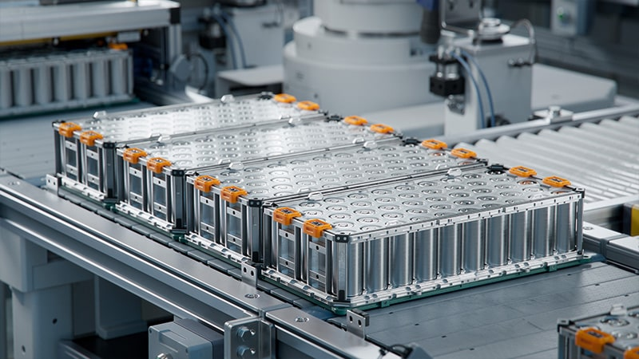

@@include('header.htm')
@@include('sidenav.htm',{'home':'', 'about':'', 'contact':'', 'pages':'active', 'home2':'', 'category':'', 'postDetails':'active', 'pnp':''})

<div class="main-content">
    @@include('mobile-nav.htm')

    <div class="container py-4 my-5">
        @@include('search-form.htm')
        
        <div class="row justify-content-between">
            <div class="col-lg-10">
                
                <h1 class="text-white add-letter-space mt-4">A look at how innovation and electrification are shaping Canada’s auto sector</h1>
                <ul class="post-meta mt-3 mb-4">
                    <li class="d-inline-block mr-3">
                        <span class="fas fa-clock text-primary"></span>
                        <a class="ml-1" href="#">24 April, 2016</a>
                    </li>
                    <li class="d-inline-block">
                        <span class="fas fa-list-alt text-primary"></span>
                        <a class="ml-1" href="#">Automotive</a>
                    </li>
                </ul>

                <p>This article highlights how Canada's automotive sector is transforming due to innovation and electrification, emphasizing the transition towards electric vehicles (EVs). It discusses the growing importance of Ontario in the automotive industry, which is home to over 700 part suppliers and five global OEMs. As more investments are being made, especially towards EV production, Canada is positioning itself for future growth in the automotive sector.</p>

                <p>In particular, as the Canadian International AutoShow has highlighted, EVs are becoming more mainstream, with new models becoming available at affordable prices. However, there are challenges ahead, including shifting jobs and the need for new skills, as well as competition with global players. Stakeholders and investors should be aware of these changes as they affect both the economy and the workforce in Canada, making the shift to EVs a significant area of focus for the industry.</p>

                <p>This article provides insights into the evolution of the automotive industry in Canada, the importance of supporting innovation, and how stakeholders can play a role in driving the sector's growth. With billions of dollars in investments coming into the industry, the future of Canada's automotive sector will depend on how well it adapts to these technological changes.</p>

                <div class="blockquote bg-dark my-5">
                    <p class="blockquote-text pl-2">The automotive industry is facing a paradigm shift with electrification, and innovation will determine the future of the sector. Stakeholders must consider how to support this transition for long-term growth and stability.</p>
                    <span class="blockquote-footer text-white h4 mt-3">Automotive Expert</span>
                </div>

                <div class="widget">
                    <h1 class="widget-title text-white d-inline-block mb-4">Read the Full Article</h1>
                    <a href="https://www.automatecanada.ca/the-road-ahead/" target="_blank" class="btn btn-primary">Read More </a>
                </div>
            </div>
        </div>
    </div>

    @@include('footer-block.htm')
</div>

@@include('footer.htm')
